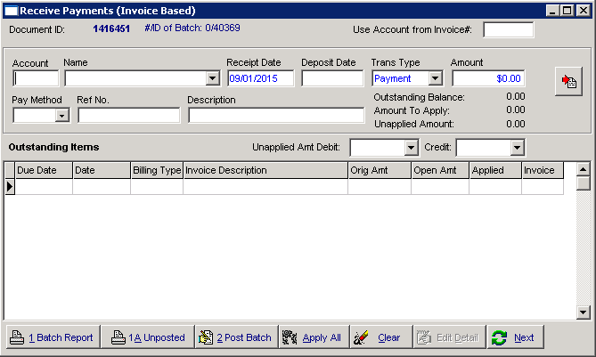
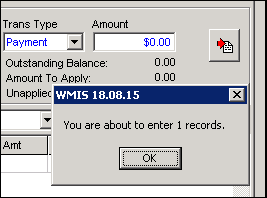
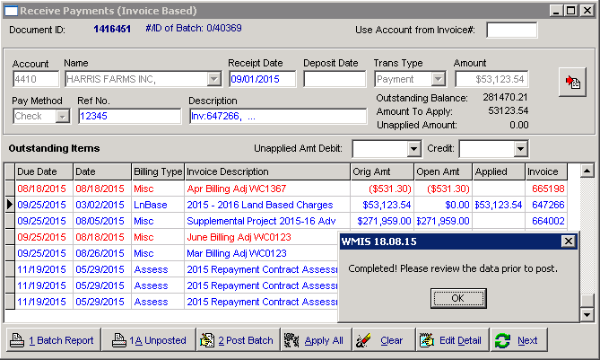

When applying payments in Wmis, you will initially see a window similar to the following.
Initial Receive Payments Window.
When you are ready to apply payments from the payments processing application, you will click on the Payment Import Button.
If there are any records to process, you will likely receive a message indicating the number of records that will be imported.
After you click the OK button, the system will attempt to create payment records. After this is completed you will be presented with another dialog, reminding you to review the payments.
Once you have posted the payments in wmis, the payments should be marked as posted in the payment processing application.